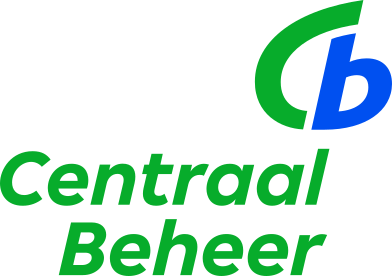

01
Diepe technische expertise
Complexe systemen, cloud-native architectuur, microservices. Tien jaar .NET en Azure — van eerste regel code tot productie op schaal.
Lead Developer · Ex-Koninklijke Marine · Security-first
Ik verbind diepe technische expertise met leiderschap, discipline en security-first denken. Sterk in complexe systemen — én in richting geven, keuzes maken en teams meenemen en neerzetten.
Tien jaar .NET & Azure · zes jaar Koninklijke Marine
Diepe techniek · Leiderschap · Discipline · Security01 — DE COMBINATIE
Complexe systemen, cloud-native architectuur, microservices. Tien jaar .NET en Azure — van eerste regel code tot productie op schaal.
Richting geven, keuzes maken en teams meenemen en neerzetten. De schakel tussen wat de business wil en wat technisch slim is.
Gevormd bij de Koninklijke Marine: rust onder druk, structuur, en de gewoonte om dingen echt af te maken — niet half.
Security is geen sluitpost. Als Security Champion en met een achtergrond in securitygevoelige omgevingen denk ik vooraf na, niet achteraf.
02 — OVER MIJ

Mijn carrière begon bij de Koninklijke Marine, waar ik zes jaar voer als verbindelaar en Chef Verbindingsdienst. Na een periode in de offshore-industrie stapte ik over naar IT — om meer thuis te zijn en mijn passie voor technologie te volgen.
Inmiddels meer dan tien jaar in softwareontwikkeling. Ik heb mooie dingen mogen bouwen: van chatplatforms voor honderdduizenden patiënten tot de systemen achter het grootste nieuwsplatform van Nederland. Wat ik het liefst doe is teams beter maken — samen bouwen, processen stroomlijnen en de vertaalslag maken tussen business en techniek.
De discipline en het security-bewustzijn uit mijn tijd bij de marine neem ik overal in mee. Buiten werk vind je me in de keuken, in de natuur, op het water of op de motor.
Gewerkt voor o.a.
![ABN AMRO]()

03 — WERK
Een chatplatform voor honderdduizenden patiënten.
Dagelijks gebruikt om met de zorgverlener te communiceren. Als Lead Developer een team aangestuurd, .NET-migraties gedaan en stap voor stap microservices geïntroduceerd.
De systemen achter het grootste nieuwsplatform van Nederland.
Backend op schaal, met performance en betrouwbaarheid als rode draad — en betrokken bij de migratie van de zwaarste onderdelen richting Rust.
Verzekeringssoftware van on-prem naar de cloud.
Chatoplossingen voor meerdere grote merken van een verzekeraar. Als Security Champion de lat voor beveiliging hooggehouden en junior developers gecoacht.
Een cloud-native platform van test naar productie.
Legacy waar nodig omgebouwd naar schaalbare microservices en AI in het ontwikkelproces gevlochten. De schakel tussen business en development.
Volledige werkhistorie op LinkedIn ↗
04 — SKILLS
05 — WAT ANDEREN ZEGGEN
“[ Aanbeveling van een oud-collega of manager komt hier — over leiderschap, techniek of de combinatie. ]”
“[ Tweede aanbeveling — bij voorkeur over impact, betrouwbaarheid of teamwerk. ]”
06 — CONTACT
Eén bericht is genoeg. Of het nu over techniek, een team of gewoon een goed gesprek gaat — ik hoor graag van je.